Concept Projects
Design work undertaken outside of formal study and professional practice — self-directed projects where I've developed the brief, explored options, and carried the design through to a resolved outcome.

Kitchen Renovation
A full kitchen redesign — layout reconfiguration, material selection, and detailing through to final completion.
View project →Kitchen Renovation
Full kitchen redesign — layout reconfiguration through to final detailing
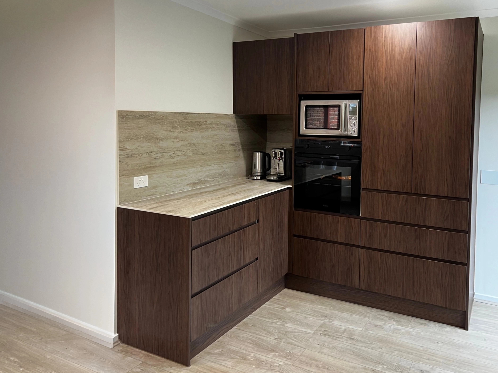
A full kitchen redesign that began as a brief to refresh finishes and developed into a complete reconfiguration of the layout. Working through the existing space revealed an opportunity to improve flow, storage, and ergonomics by rethinking the floor plan rather than working within the original footprint.
Before
The existing kitchen and meals area prior to renovation. The first two images were taken at the time of purchase with the original styling in place; the next two show the space once vacated — with the meals furniture removed, the spatial constraints of the original layout become more apparent. The final three images are from a previous sale listing dated c. 2013, included to show the condition and layout of the space over a decade earlier — including the dead space adjoining the kitchen that was later reworked into the meals area.
Existing conditions
- Bold red ceramic tile splashback and grey stone-look laminate benchtop with a dated bullnose edge profile — a colour scheme that significantly ages the space
- No designated pantry; storage limited to standard overhead and below-bench cabinetry with poor capacity
- Restricted bench run with minimal usable preparation space
- Dated 1¼ bowl stainless steel sink with drainer, top-mounted to the laminate benchtop — a functional and aesthetic liability
- Oven positioned under the benchtop rather than at a comfortable working height
- Meals area confined to a small corner — the footprint accommodated only a compact round table for four
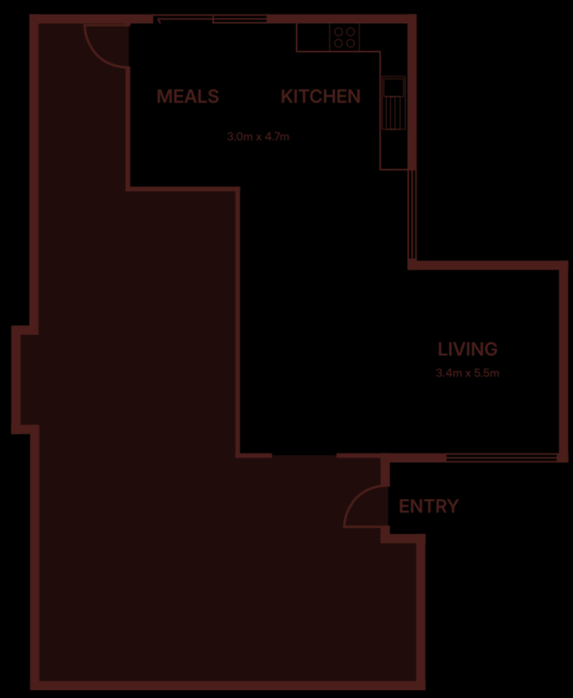
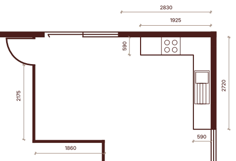
Design Development
The design process began with researching off-the-shelf cabinetry solutions — first through Kaboodle, then IKEA — as a pragmatic starting point for understanding spatial possibilities and product ranges. As the design ideas developed and became more resolved, it became clear that going custom through a cabinet maker was the stronger path forward. Rather than a change of direction, it was an opportunity to take the ideas already developed and refine them without constraint — not being limited to the available product ranges, colourways, or standard modular dimensions meant the design could be executed exactly as intended. In particular, it opened up the material selection considerably: instead of finding the closest match within what either brand offered, the exact Polytec finish and profile could be specified from the outset.
The tapestry below brings together the research and ideas explored along the way — product research through Kaboodle and IKEA, colour and finish direction, and specific inspiration for details like the coffee corner and pantry organisation.
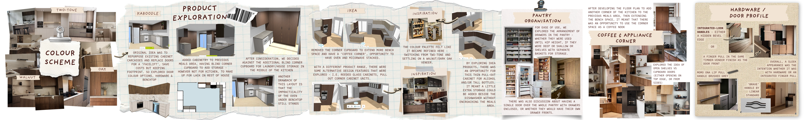
Layout Reconfiguration
As part of the design development I proposed adjusting the floor plan to make better use of the available space.
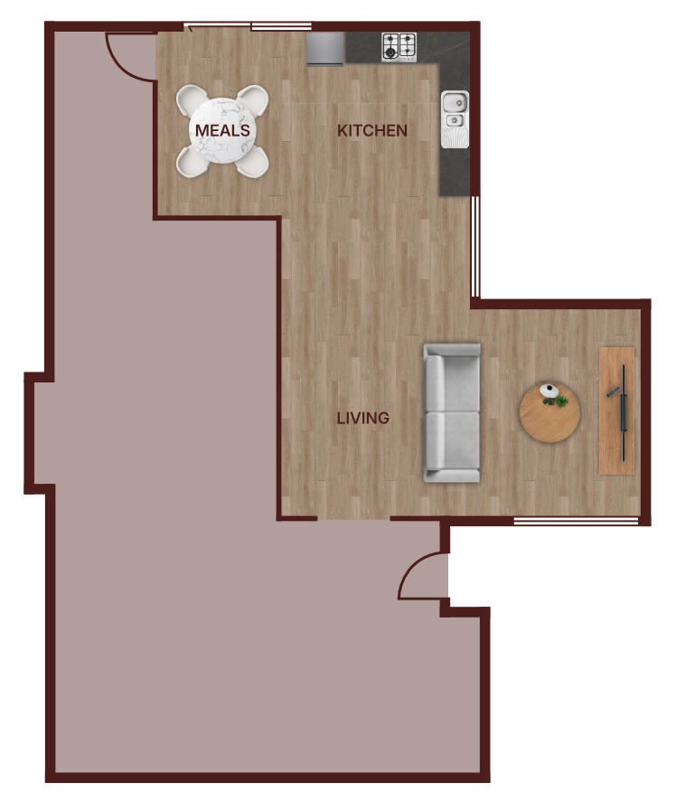
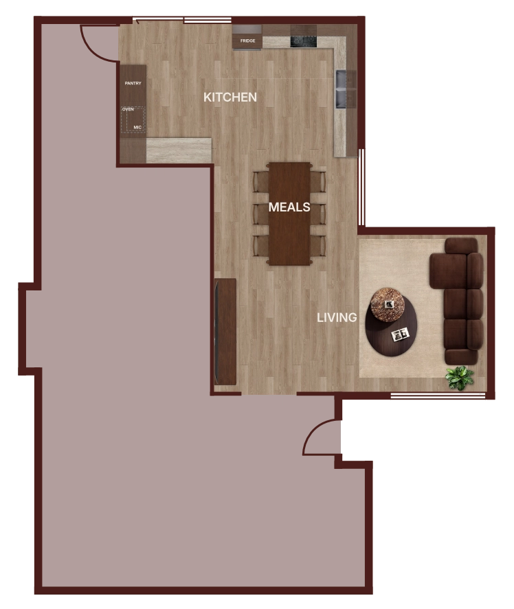
I suggested this reconfiguration for several reasons:
- Made use of the empty space separating the kitchen from the living area, which was previously an ineffective use of floor space
- Relocated the meals area into that space, freeing up the original meals area to become additional kitchen floor space
- Created the opportunity for a proper pantry, which the original layout did not allow for
- Added bench space and reorganised the appliance layout so the oven is no longer positioned beneath the cooktop
- Gave the microwave its own dedicated position, rather than sitting on the benchtop
- Allowed drawers to replace cabinets wherever applicable in the lower cabinetry, improving everyday accessibility
Developmental Drawings
My floor plan as the layout was refined. The final cabinetry was produced to manufacture by the cabinet maker from this concept, so detailed joinery drawings shown elsewhere are their own technical documentation rather than mine.
Material Palette
↓ Click a material to explore
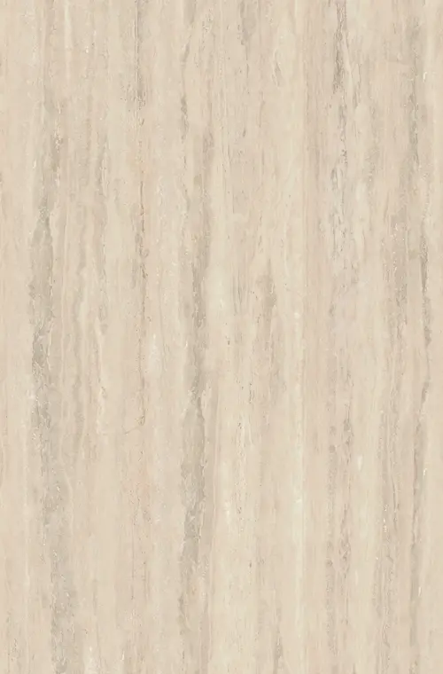
'Travertino' 12mm porcelain by Stone Ambassador, from the Vasari Porcelain Surfaces range. Natural surface finish.
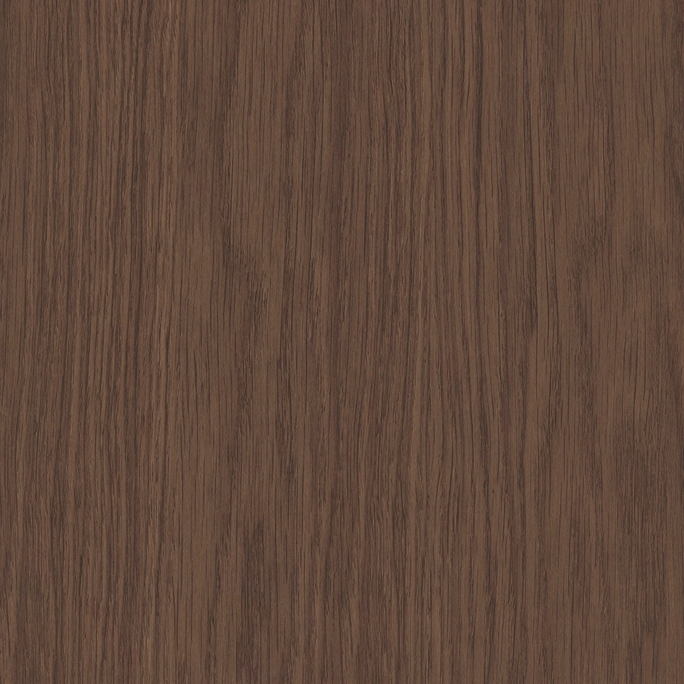
'Rubra Oak' Woodmatt finish by Polytec, 18mm thick thermolaminated doors and panels. Subtle woodgrain embossing with an overall matt finish — a deep red-brown undertone with dark brown grain in a solid oak woodgrain with subtle crown cuts. Bevelled-edge finger-pull profile, no handles, soft-close drawers and doors throughout.
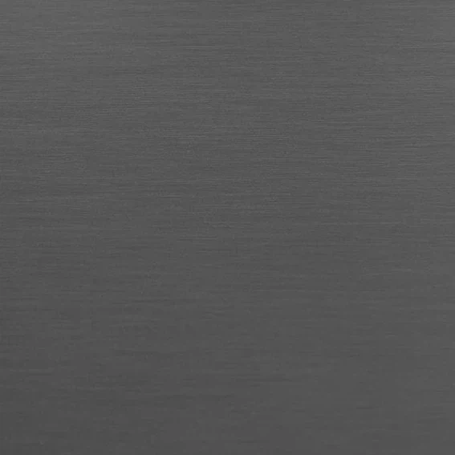
Gunmetal grey finish on both the sink and tap, coordinated for a cohesive look throughout the kitchen.
Under-cabinet LED track lighting was added — not purely for aesthetics, but as appropriate task lighting for this area of the house, which receives the least natural light of any room.
Final Details
The completed kitchen — an above plan view of the final layout, followed by photographs of the finished space.
Above plan view — final layout
1 / 8


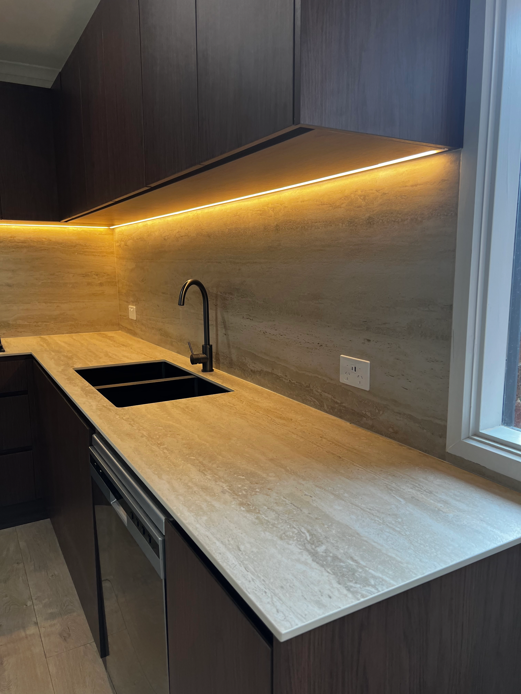

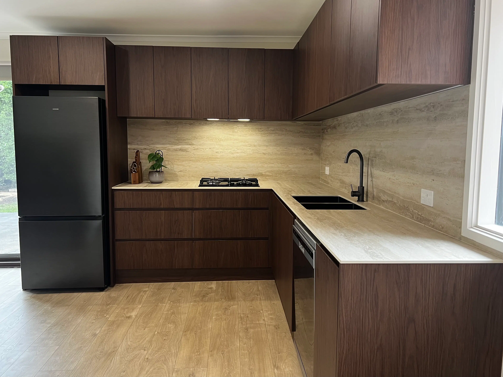
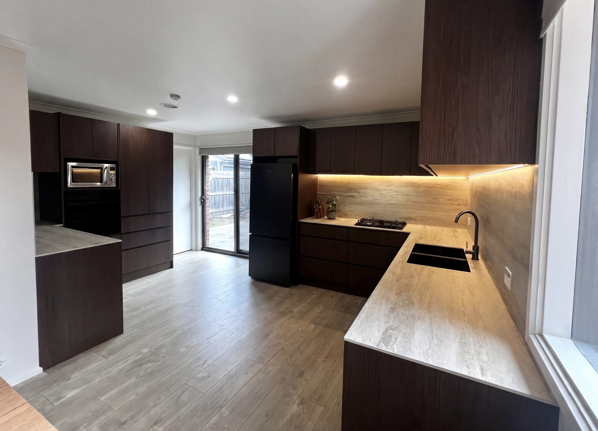

The lower corner cabinet presented a common problem — the geometry of an internal corner makes drawers impractical, leaving a standard hinged door as the only option and the space largely inaccessible. A Lehmann's corner unit was specified here: a swing-out carousel system that brings the full depth of the cabinet out to the user on open, eliminating the need to reach into a dark corner. The result is a practical appliance cupboard — slow cooker, rice cooker, and blender all stored at bench height and fully accessible without bending or rummaging.
Key outcomes
- Reassessed the original brief and identified a full layout reconfiguration as the stronger design solution ↳ responding to: dead space between kitchen and living
- Proposed relocating key appliances to improve ergonomics and workflow through the space ↳ responding to: oven under benchtop, poor prep-to-cook flow
- Developed the design from early inspiration and sketches through to resolved floor plan and joinery drawings ↳ responding to: no designated pantry, limited storage
- Selected and coordinated a cohesive material and finish palette across benchtop, cabinetry, and fittings ↳ responding to: dated red tile splashback, grey laminate benchtop
- Carried the design through to completion, from concept to finished kitchen

Laundry Fit-Out
A storage and finish-led laundry fit-out within the existing footprint — plumbing retained in place, design effort directed at functionality and presentation.
View project →Laundry Fit-Out
Storage and finish-led fit-out within the existing footprint
This project is currently at proposal stage — design and material selections shown below have not yet been built.
The existing laundry retains its original plumbing layout — relocating services wasn't justified for this brief, so the design challenge became one of working within a fixed footprint rather than reconfiguring it. The proposal focuses on resolving the room's two biggest functional failures — a dryer that doesn't properly fit its allocated space, and a near-total absence of storage for linen and cleaning supplies — alongside a full finish refresh.
Before
The existing laundry as it stands. The first image shows the room vacant, prior to appliances or storage being introduced; the following two show the space in everyday use, where the practical shortcomings of the layout become apparent.
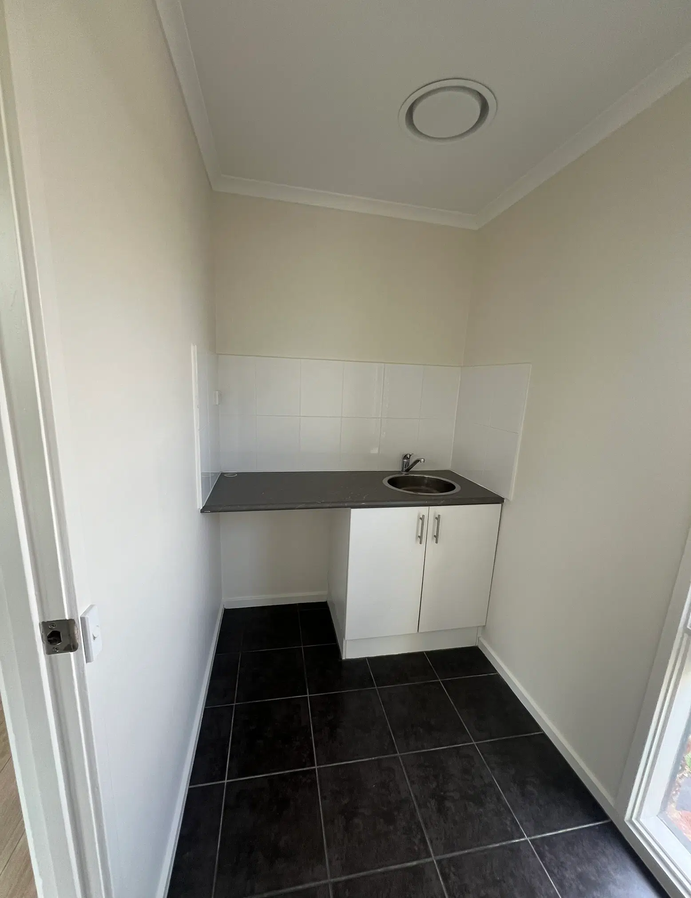
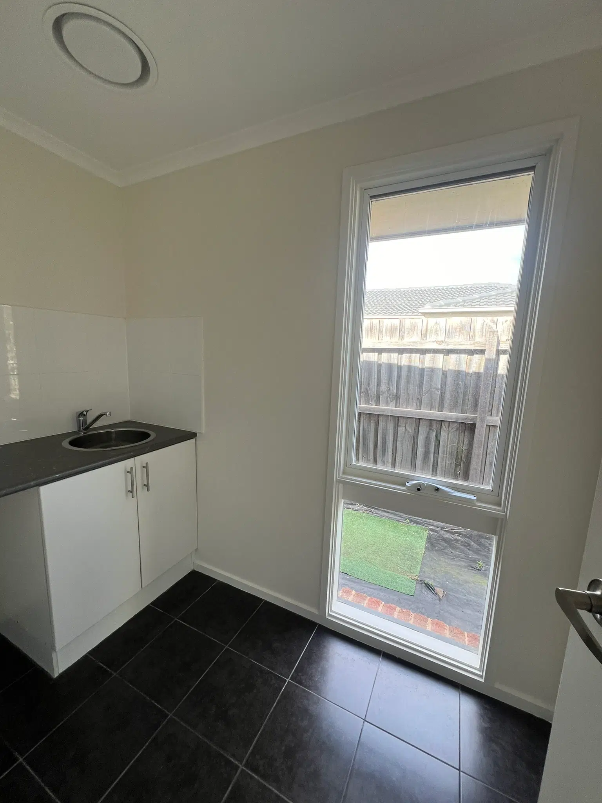
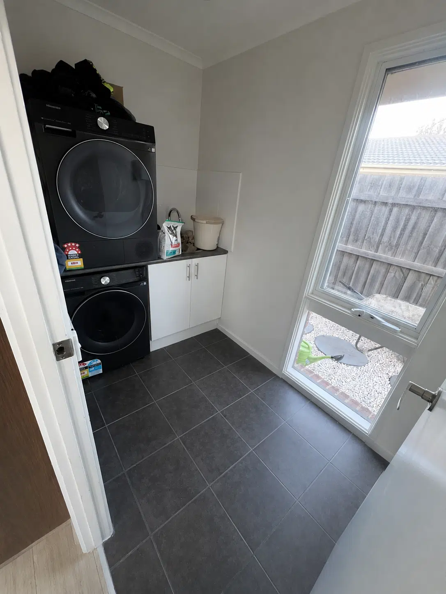
Existing conditions
- Dryer does not properly fit its allocated space within the existing footprint
- No dedicated storage for linen, cleaning supplies, or general laundry essentials
- Round laundry trough is impractical — poor functionality for soaking, scrubbing, or filling larger items compared to a standard rectangular bowl
- Dated finishes throughout, inconsistent with the rest of the home's renovated areas
Proposed Design
Concept direction for the fit-out — layout intent, material selections, and rationale. This section will be replaced with finished photography once the project is built.
Design Development
Inspiration imagery and mood board direction developed to guide the material and finish selections.

Bathroom Refresh
A finish-led bathroom refresh addressing functional shortfalls in the existing layout, including water management issues around the shower.
View project →Bathroom Refresh
Finish-led refresh responding to existing functional shortfalls
This project is currently at proposal stage — design and material selections shown below have not yet been built.
The existing bathroom has required at least one reactive fix since move-in — a shower screen retrofitted after water spray from the open shower was found to be damaging the adjacent vanity. This proposal looks at the bathroom holistically, addressing finish and presentation alongside the functional issues that have already required intervention, rather than treating them as isolated fixes.
Before
The existing bathroom. The first image is from the original sale listing; the remaining images were taken since moving in, including the shower screen added after the fact to address water damage to the vanity.
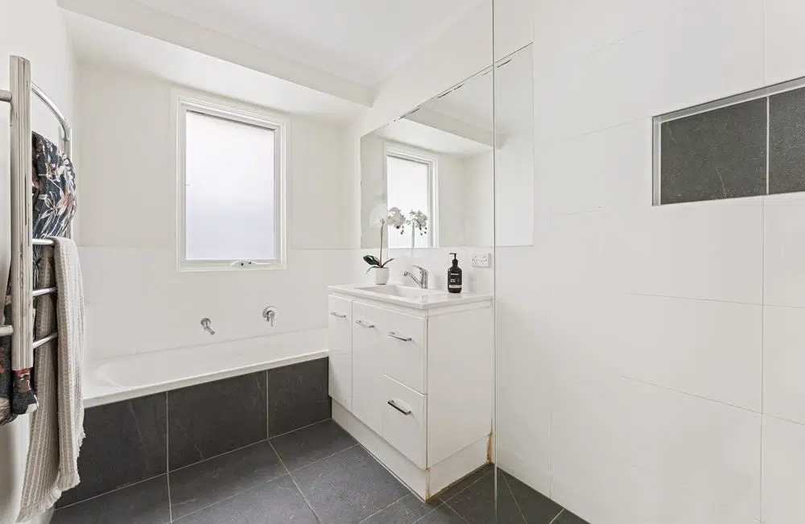
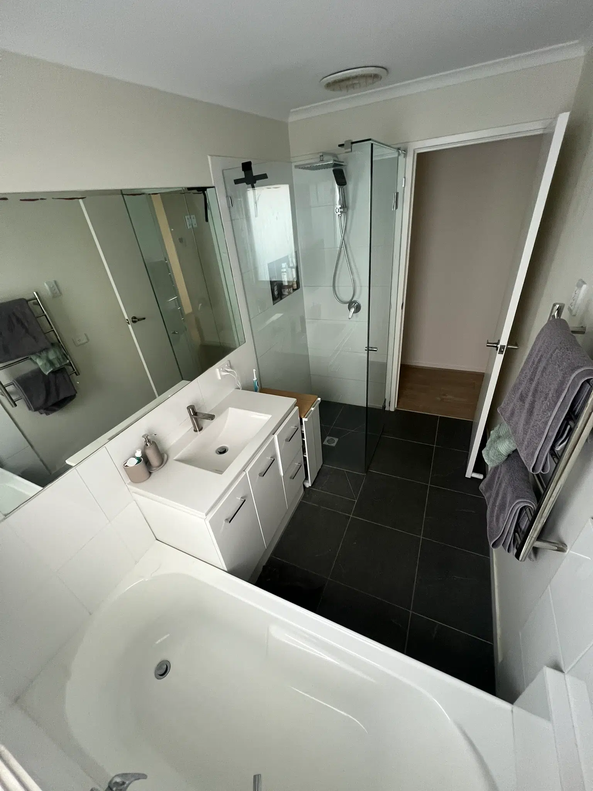
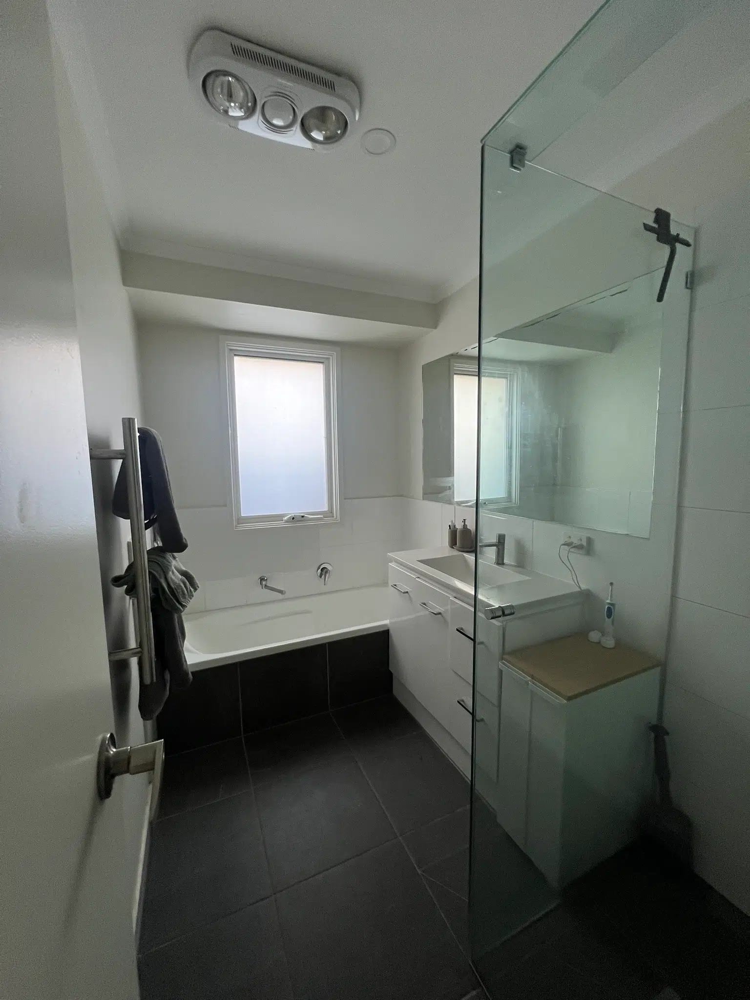
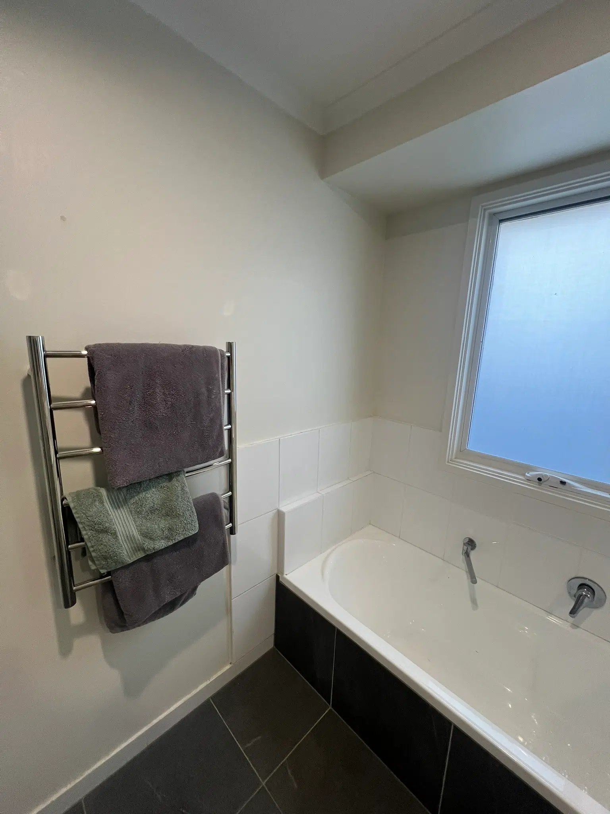
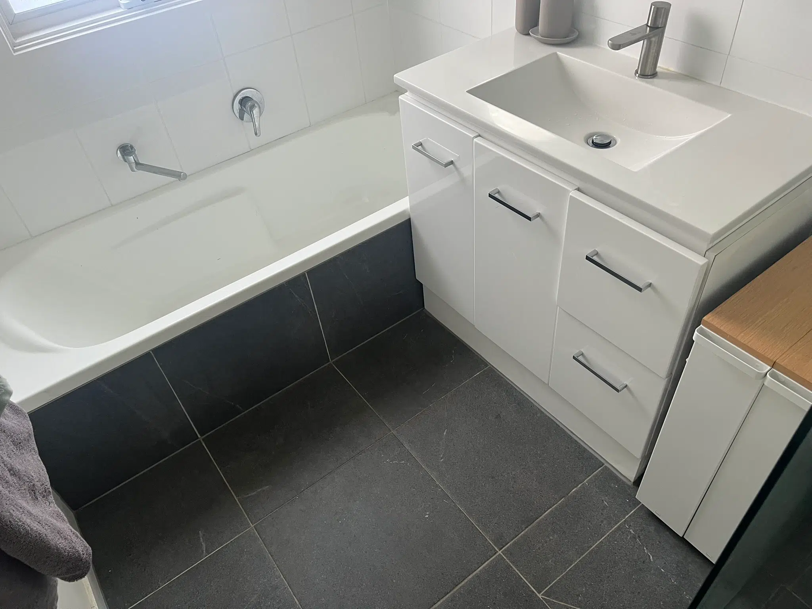
Existing conditions
- Open shower originally had no screen — spray direction caused water damage to the adjacent vanity, requiring a shower screen to be retrofitted after move-in
- Two wheeled caddy storage cabinets were purchased to compensate for the vanity's poor internal storage — positioned between the vanity and the retrofitted shower screen, they also serve to conceal the water-damaged vanity surface
- Dated finishes throughout, inconsistent with the rest of the home's renovated areas
- Limited storage for everyday toiletries and linen
Proposed Design
Concept direction for the refresh — layout intent, material selections, and rationale. This section will be replaced with finished photography once the project is built.
Design Development
Inspiration imagery and mood board direction developed to guide the material and finish selections.